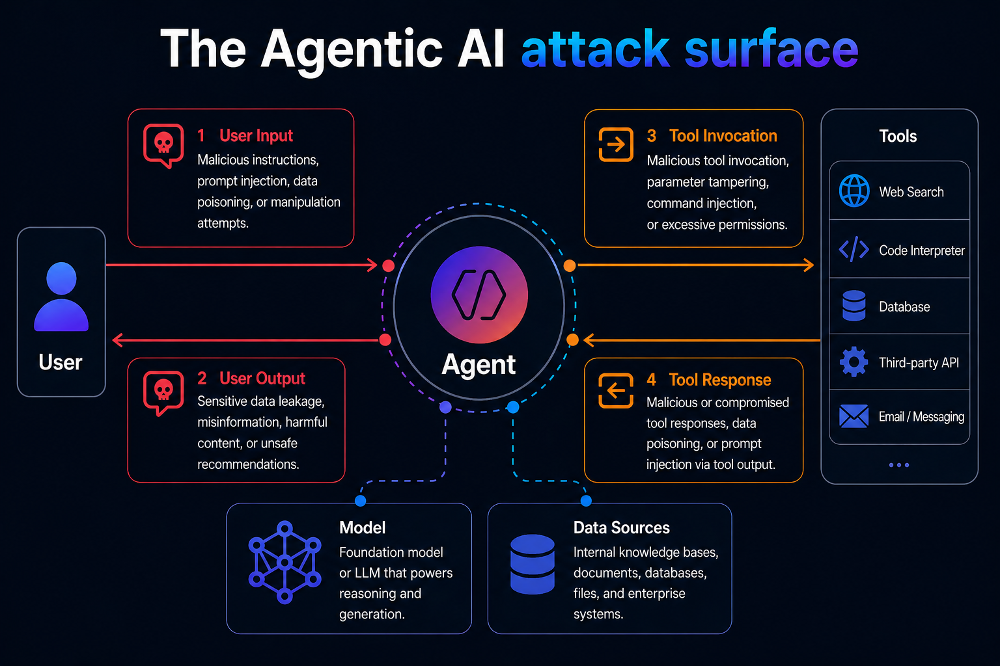
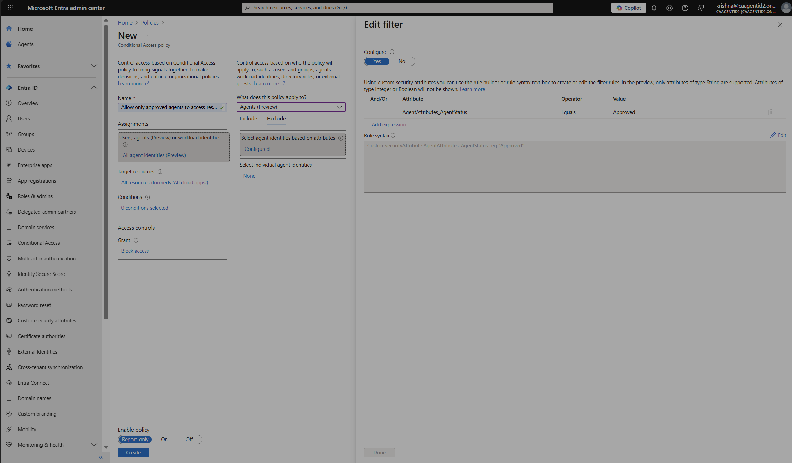
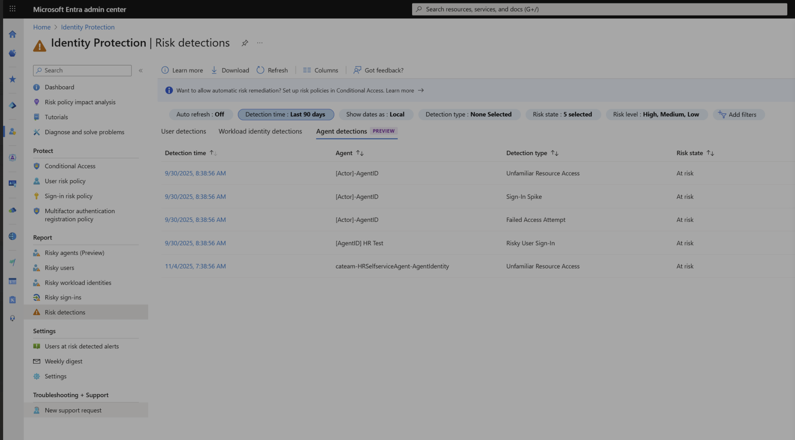

Summary
Every agent needs the same identity discipline enterprises already apply to employees — but most organizations don't have it yet. Agents today are commonly unknown and unsupervised, over-privileged by default, and unmanaged and ungoverned. This chapter covers how Microsoft Entra Agent ID addresses that gap through a three-part model — Register, Govern, Protect — and applies it back to the FinOps reference architecture from Chapter 2.
Core concepts
The identity gap
Before any governance model, agents in most environments share three properties that make them a distinct risk category from either human or traditional service-account identities:
- Unknown and unsupervised — no consistent inventory of what agents exist, who created them, or what they're allowed to do.
- Over-privileged by default — agents are frequently granted broad standing access because narrowing scope takes deliberate effort nobody has budgeted for.
- Unmanaged and ungoverned — no lifecycle: agents outlive their purpose, their owners change teams, and nobody notices.
Register, Govern, Protect
Entra Agent ID organizes identity controls into three stages, each addressing one property of the identity gap above:
- Register — bring every agent, whether built on a Microsoft platform or a third party, into a single agent registry. The registry is a centralized metadata store; agents brought in via open APIs avoid the "every tool has its own list" problem that makes agent sprawl invisible.
- Govern — lifecycle management, sponsors and managers, and access governance. This is where orphaned agents get identified and sponsor assignment gets automated as ownership changes.
- Protect — conditional access, Identity Protection, and traffic filtering applied to agents the same way they're applied to users today.
Discovery through collections
Agent discovery is governed through collections-based governance. Admins can make agents discoverable organization-wide using Global Collections, or restrict visibility by department (HR, Finance) using Custom Collections. This gives you unified visibility — a single view of every agent instance, including ones not backed by Agent ID — and secure collaboration, since agents can discover and interact with each other in a trusted, bounded way rather than an open free-for-all.
Architecture discussion
Entra Agent ID sits alongside the platforms that host agents, extending the same protections Entra already provides for employee identities:

Applied to the FinOps architecture
Layered onto the FinOps diagram from Chapter 2, Entra Agent ID addresses four things directly:
- Sprawl — distinguishing approved agents from shadow AI across the FinOps Planner, Cost Analysis, and Cost Optimization agents.
- Lifecycle — centralized inventory and governance instead of three independently-tracked agents.
- Permission creep — access packages scope exactly what each agent's identity can reach, instead of standing broad access to cost data and cloud resources.
- Activity anomalies — behavior baselined against past patterns, so a Cost Optimization agent suddenly querying HR data is a detectable anomaly, not silent.


Key security considerations
- Standing access is the recurring root cause. The Reddit-documented incident that opens this chapter (an agent given broad, unscoped filesystem and cloud CLI access, then manipulated into a destructive action) is a governance failure, not a model failure — the model did exactly what it was instructed to do.
- Time-bound access packages shrink blast radius. If an agent is compromised, the compromise window is limited to however long its access package is valid — not indefinitely.
- Automated lifecycle management is not optional at scale. Manual sponsor reassignment and orphan detection do not survive contact with hundreds of agents; automation is what keeps accountability aligned with reality as ownership changes.
- Network-layer controls are a second line of defense, not a replacement for identity controls — Entra Internet Access catches prompt injection and exfiltration attempts that get past application-layer defenses, but it doesn't replace scoping what an agent's identity can access in the first place.
Recommended practices
- Register every agent — including third-party and SaaS-embedded ones — in a single agent registry before granting it any production access.
- Default every agent identity to a time-limited access package. Standing, indefinite access should require an explicit exception with an owner and an expiry date.
- Apply Conditional Access to agents using the same custom security attributes and risk-based policies already used for human identities — don't build a parallel, weaker policy set "for agents."
- Enable Identity Protection risk signals for agents and route flagged agents to automatic access blocking, not just an alert queue nobody watches.
- Layer network-level controls (Secure Web + AI Gateway) as defense-in-depth against prompt injection and data exfiltration, on top of — not instead of — identity-level scoping.
Technologies referenced
- Microsoft Entra Agent ID — agent registry, lifecycle, and access governance.
- Microsoft Entra Conditional Access and Identity Protection — policy enforcement and risk-based detection, extended to agents.
- Microsoft Entra Internet Access (Secure Web + AI Gateway) — network-layer prompt-injection protection and data-exfiltration prevention.
- Azure AI Foundry (Agent Service, Models, Observability) — the pro-code platform Agent ID secures in this chapter's architecture diagram.
Key takeaways
- Agents today are typically unknown, over-privileged, and ungoverned by default — Register, Govern, Protect is the model to close all three gaps.
- Time-bound access packages and automated lifecycle management shrink both the standing attack surface and the operational burden of managing agents at scale.
- Identity controls are the primary defense; network-layer controls (Secure Web + AI Gateway) are the second line, not a substitute.